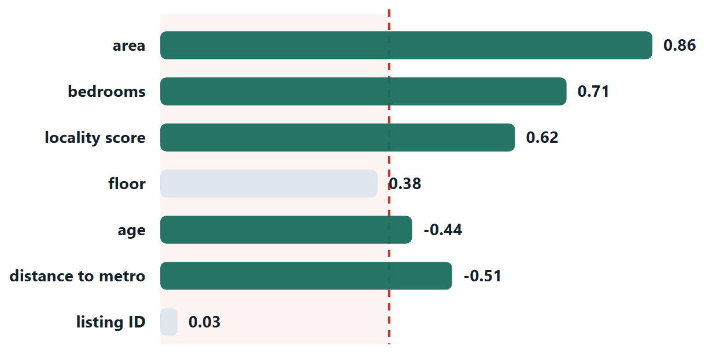
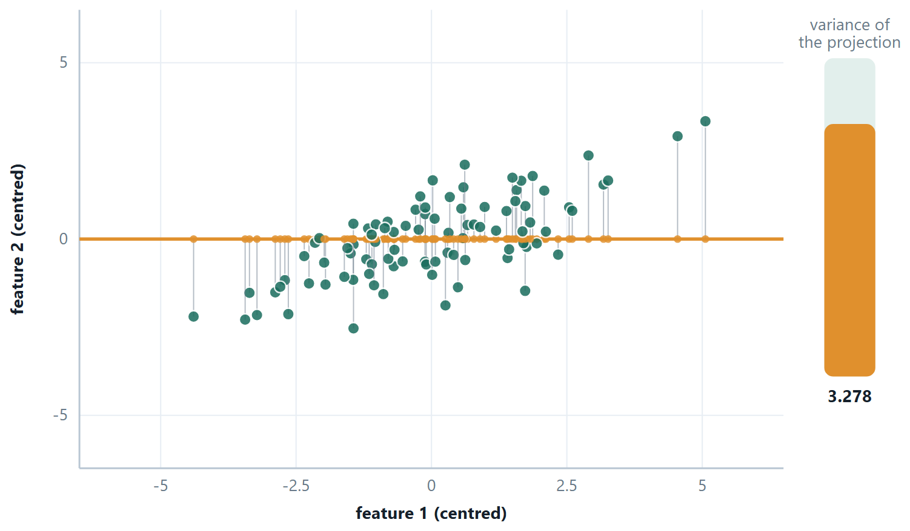
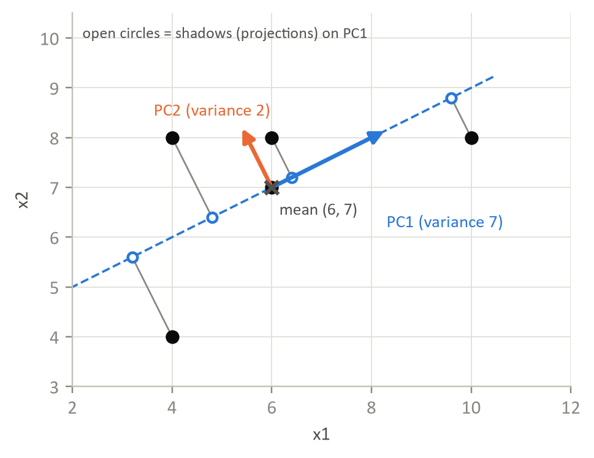
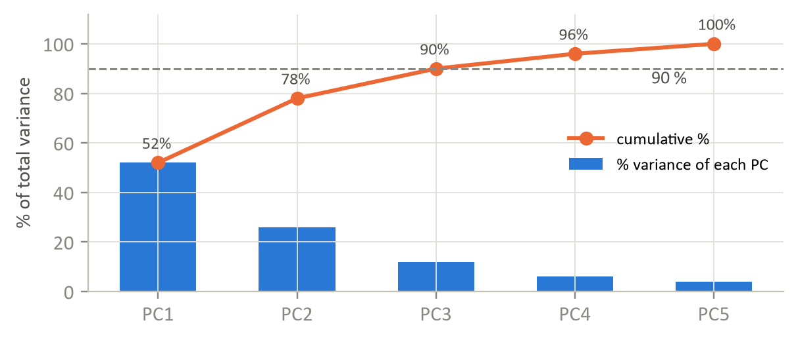

Chapter 3: Feature Selection and Principal Component Analysis¶
Chapter 2 prepared the values of each feature, one column at a time. This chapter asks a different question: which features should the model see at all, and could a smaller set of better-constructed features do the same job? Feature selection keeps a subset of the original columns. Principal component analysis builds a handful of new columns that carry most of the variation in the old ones. Both fight the same enemy, a model with more freedom than the data can pin down, and both, like every learned transformation in Chapter 2, must be fitted on the training data alone.
3.1 Feature selection¶
Fewer, better features give you a faster model, a smaller variance, less overfitting and something a human can read. Three families do the job, and they differ in how much they involve the model itself.
| Filter | Wrapper | Embedded |
|---|---|---|
| Ranks features by a statistic, before and independently of any model | Trains the model on candidate subsets and keeps the best | Selection happens as part of fitting |
| Variance threshold, correlation with the target, \(\chi ^{2}\), mutual information | Best-subset, forward selection, backward elimination, recursive feature elimination | Lasso (L1) drives coefficients to exactly zero; tree importances |
| Very fast; scales to thousands of features | Accounts for interactions and for the specific model | Cost of one fit, with interactions accounted for |
| Blind to combinations — two features useless alone but perfect together are both discarded | Expensive: best-subset on \(n\) features means \(2^{n}\) fits | Tied to the model family that provides it |
| Blind to the model that will eventually be used | Risks overfitting the selection itself — do it inside the cross-validation loop | Usually the best default when it is available |

Definition: The exhaustive wrapper, and why nobody runs it on 40 features
1. Let \(M_{0}\) be the null model — it predicts \(\bar{y}\) for every input.
2. For each \(k = 1, 2\), …, \(p\), fit all C(p, k) models containing exactly \(k\) features, and let \(M_{k}\) be the one among them with the smallest residual sum of squares.
3. Choose among \(M_{0}, M_{1}\), …, \(M_{p}\) by a criterion that charges for size: cross-validated error, \(C_{p}\), AIC, BIC or adjusted \(R^{2}\).
Step 3 cannot use RSS or \(R^{2}\), and that is the part most often got wrong. RSS never rises when a feature is added — the bigger model can always reproduce the smaller one by setting the extra coefficient to zero, and noise means it will do slightly better than that on the training data. So RSS falls and \(R^{2}\) rises monotonically with \(k\), and either would select the full model every time. Comparing across sizes needs a criterion with a penalty in it.
The complexity is 2 p
Summing over all sizes, \(\sum _{k=0..p} C(p, k) = 2^{p}\) models, each costing \(O(\text{mk}^{2} + k^{3})\) to fit by least squares. Ten features is 1,024 fits; twenty is about a million; thirty is a billion; forty is \(10^{12}\). Best-subset selection is used up to roughly \(p =\) 30–40 and no further.
The statistical cost is the real objection
Picking the best of \(2^{p}\) noisy scores means the winner is the maximum of a very large sample, so it is optimistically biased — the selection itself overfits, and the winning model looks better than it is. This is true even if you had the compute. It is why the final comparison must be made on held-out data, and why greedy methods (forward, backward — \(O(p^{2})\) fits) and embedded ones (lasso — one fit) are preferred in practice, despite neither being guaranteed to find the best subset.
Forward selection starts with nothing and repeatedly adds the feature that most improves validation performance. Backward elimination starts with everything and repeatedly drops the least useful. Both are greedy — each is a path through the \(2^{n}\) subsets, not a search of all of them — so neither is guaranteed to find the best subset, and they can end up in different places.
Selection versus extraction
Feature selection keeps a subset of the original columns, so the survivors still mean what they meant: “area” is still area, and you can explain the model to a client. Feature extraction — PCA next — builds new columns as combinations of the old ones. It usually compresses better, and it costs you the ability to say what any coordinate means. Choose according to whether interpretability matters.
3.2 Principal Component Analysis¶
Photograph a cloud of points from the wrong angle and it looks like a shapeless blob; from the right angle you see it is a long thin cigar. PCA finds the right angle. It rotates the coordinate system so that the first axis points along the direction in which the data varies most, the second along the largest remaining variation perpendicular to the first, and so on. Once that is done, the last few axes usually carry almost no variation at all, and you can drop them — describing the same data with fewer numbers.
Why variance? Because a direction along which the data barely varies tells you almost nothing about which point is which. Variance is being used as a proxy for information, and it is a good proxy — not a perfect one, which matters for the warnings at the end of this section.

The recipe¶
Definition: PCA in five steps
1. Standardise every feature (mean 0, variance 1) — unless all the features are already in the same unit.
2. Compute the covariance matrix \(S = (1/(m-1)) X^{T}X\) on the centred data. It is \(n \times n\) and symmetric.
3. Find the eigenvalues and eigenvectors of \(S\). Each eigenvector is a direction; its eigenvalue is the variance of the data along that direction.
4. Sort by eigenvalue, largest first. Eigenvector 1 is PC1.
5. Project: keep the first \(k\) eigenvectors as columns of a matrix \(W\), and replace \(X\) by XW, which has \(k\) columns instead of \(n\).
the proportion of variance explained by component i — the eigenvalues are the variances, so this is just their share
There are three ways to choose \(k\). Keep enough components to reach a cumulative PVE of 90% or 95%. Or look for the elbow in a scree plot of \(\lambda\) against component number. Or, if PCA is one step inside a supervised pipeline, treat \(k\) as a hyper-parameter and cross-validate it.
Three things PCA is not
It is not feature selection: every principal component uses every original feature, so PCA does not let you stop collecting any of them. It is not supervised: it never looks at \(y\), so it can happily discard a low-variance direction that was the only one that predicted the target. And it is not scale-invariant: run it on unstandardised data and the feature measured in the largest numbers becomes PC1 by arithmetic accident.
The curse of dimensionality
As the number of features grows, the volume of the feature space grows exponentially, and any fixed number of examples becomes sparse within it. Distances between points become nearly equal — which quietly destroys k-NN and k-means, since both are built on the claim that some points are nearer than others. To keep the same density of examples, \(m\) must grow exponentially with \(n\). This is why dimensionality reduction is not merely an efficiency measure; past a certain point it is what makes learning possible at all.
# PCA, with the two lines that decide whether it means anything
from sklearn.decomposition import PCA
import numpy as np
pca = make_pipeline(StandardScaler(), PCA()).fit(X_tr) # standardise FIRST
p = pca[-1]
print(p.explained_variance_) # the eigenvalues from the derivation
print(p.explained_variance_ratio_.round(3)) # each one divided by their sum
print(np.cumsum(p.explained_variance_ratio_).round(3))
# or let it choose k for you: keep just enough components for 95%
pca95 = make_pipeline(StandardScaler(), PCA(n_components=0.95)).fit(X_tr)
print("kept", pca95[-1].n_components_, "of", X_tr.shape[1])
# what a component is made of — every original feature, with a weight
print(p.components_[0].round(2)) # PC1 as a recipe over the features
Example 3.1: Why PCA is an eigenvector problem
Problem. The recipe says: take the eigenvectors of the covariance matrix. Where does that come from? Nothing here is assumed except the definition of variance.
Step 1 — write down the projected variance
Centre the data so every column has mean zero. Project an example \(x\) onto a direction \(u\) of unit length: the projected value is the scalar \(u^{T}x\). The variance of those values over the \(m\) examples is
\(\operatorname{Var}(u^{T}x) = (1/(m-1)) \sum _{i} (u^{T}x_{i})^{2} = (1/(m-1)) \sum _{i} u^{T}x_{i}x_{i}^{T}u = u^{T}\) S u
where \(S = (1/(m-1)) \sum x_{i}x_{i}^{T}\) is exactly the covariance matrix. So the variance along any direction is \(u^{T}\text{Su}\) — the covariance matrix appears on its own, rather than being assumed.
Step 2 — state the problem properly
Maximise \(u^{T}\text{Su}\) subject to \(u^{T}u = 1\). The constraint is essential: without it the objective could be raised for ever by making \(u\) longer, which changes no direction at all.
Step 3 — a Lagrange multiplier
Form \(L = u^{T}\text{Su} - \lambda (u^{T}u - 1)\) and set the derivative with respect to \(u\) to zero. Using \(\partial (u^{T}\text{Su})/\partial u =\) 2Su for symmetric \(S\) — and a covariance matrix is always symmetric — and \(\partial (u^{T}u)/\partial u = 2u\):
2Su \(- 2\lambda u = 0\), that is, Su \(= \lambda u\).
The stationary directions are precisely the eigenvectors of \(S\). That is where they come from; they were never put in by hand.
Step 4 — which eigenvector, and what \(\lambda\) means
Multiply Su \(= \lambda u\) on the left by \(u^{T}\) and use \(u^{T}u = 1\):
\(u^{T}\text{Su} = \lambda\)
But the left-hand side is the projected variance from step 1. So each eigenvalue is the variance along its own eigenvector, and the direction of greatest variance is the eigenvector with the largest eigenvalue. PC2 is the next largest, and it is automatically perpendicular to PC1, because a symmetric matrix has orthogonal eigenvectors.
Answer. Su \(= \lambda u\) — the principal components are the eigenvectors of the covariance matrix, and each eigenvalue is the variance captured by its component
Comment. Two consequences follow at once. \(\sum \lambda _{i} = \text{trace}(S) =\) the total variance, which is why \(\text{PVE} = \lambda _{i}/\sum \lambda\) is a genuine proportion. And the whole argument measures information by variance — a good proxy, not a perfect one, which is exactly why an unsupervised method can discard a small direction that happened to be the only one predicting \(y\).
3.3 Further topics¶
Filter methods in more detail: variance, correlation and mutual information¶
A filter scores each feature with a statistic computed from the data and keeps the best. Three statistics do most of the work, and each answers a different question.
Variance threshold. A feature that barely varies carries almost no information, and a constant column (variance \(0\)) is always useless. Drop features whose variance falls below a threshold. Variance depends on units, so apply this to scaled features or with a threshold chosen per feature.
Correlation. Pearson's \(r\) ranges from \(-1\) to \(+1\). Used between two features, a value of \(|r|\) near \(1\) says they are redundant (height in centimetres and height in inches), and one of the pair can go. Used between a feature and the target, an \(|r|\) near \(0\) says the feature is a weak linear predictor. The word linear is the catch: correlation sees only straight lines.
Mutual information. The mutual information between a feature \(X\) and the target \(Y\) measures how much knowing \(X\) reduces the uncertainty about \(Y\), for any kind of dependence:
It is never negative, and it is \(0\) exactly when \(X\) and \(Y\) are independent. Features are ranked by MI with the target and the top scorers are kept. Think of it as a non-linear cousin of correlation: correlation asks whether \(X\) and \(Y\) rise and fall together along a line, mutual information asks whether \(X\) tells you anything about \(Y\) at all.
A small case shows the difference. Let \(X\) take the values \(-1, 0, 1\) with equal probability and let \(Y = X^{2}\), so \(Y\) is \(1\) with probability \(2/3\) and \(0\) with probability \(1/3\). The covariance is \(E[XY] - E[X]E[Y] = 0 - 0 = 0\), so \(r = 0\): the two halves of the U cancel. Yet \(Y\) is completely determined by \(X\), so the mutual information equals the entropy of \(Y\), \(-\tfrac{2}{3}\log_{2}\tfrac{2}{3} - \tfrac{1}{3}\log_{2}\tfrac{1}{3} = 0.918\) bits, the most any feature could say about this target. A filter based on correlation would discard \(X\); one based on mutual information would rank it first. Do not discard a feature on a low correlation alone if a curved relationship is plausible.
Scores, loadings and what is lost¶
The recipe projects data on to the first \(k\) eigenvectors; it helps to name the pieces. The score of an example on component \(j\) is its coordinate along that eigenvector, the dot product \(z_{j} = e_{j}\cdot (x - \bar{x})\). The eigenvector's entries are the loadings: the first component is the linear combination
whose weights are chosen to make the variance of \(Z_{1}\) as large as possible. The constraint \(\sum \phi^{2} = 1\) is needed because otherwise the variance could be made as large as you like by scaling the weights. A large loading in magnitude shows which original features drive the component: if all the loadings are positive and similar, the component is an overall "level"; if some are positive and some negative, it is a contrast between two groups of features.
What is lost by keeping only \(k\) components can be measured exactly. The approximation \(\hat{x} = \bar{x} + \sum_{j \le k} z_{j}e_{j}\) reconstructs each example from its first \(k\) scores, and the total squared reconstruction error equals \((m - 1)\) times the sum of the dropped eigenvalues (with the covariance divisor \(m - 1\)). This is why the eigenvalues double as a ledger: the variance of the dropped directions is precisely the information thrown away.
The Kaiser rule is a third way to choose \(k\), for standardised data only. Each standardised feature contributes variance \(1\), so a component with \(\lambda > 1\) summarises more than a single original feature, and a component with \(\lambda < 1\) summarises less than one. Keep the components with \(\lambda > 1\). It is quick and tends to keep few components, so it is a starting point to be checked against the cumulative-variance target and the scree plot.
Forward or backward? The practical constraints¶
Forward selection and backward elimination fit about the same number of models, \(p(p+1)/2\) at most, but they are not interchangeable. Backward elimination starts from the full model, which must be fitted before anything can be dropped, so it needs more examples than features (\(m > p\)) to give a unique answer. Forward selection starts from the empty model and never fits more than a few features at once, so it is the only greedy choice when features outnumber examples, as in a gene-expression data set with \(200\) patients and \(20\,000\) genes. Both can stop in a different place from each other and from the true best subset. Either way, the stopping rule must not use the training error, which can only fall: use validation or cross-validation error, a fixed minimum gain for adding a feature, or a criterion that charges for size (\(C_{p}\), AIC, BIC or adjusted \(R^{2}\)), which rewards fit and punishes extra parameters.
Two more limits of PCA¶
Beyond being unsupervised, scale-dependent and not a form of selection, PCA has two further limits. It is linear: it finds straight directions, so data that lie along a curve (a spiral, a horseshoe) cannot be summarised by a few components even though they are essentially one-dimensional. And it is sensitive to outliers, because variance squares the deviations: one extreme point can swing PC1 towards itself. Standardise, inspect for outliers (Chapter 2), and treat the components as a summary to be checked, not as the truth about the data.
3.4 Worked examples¶
The examples below work through the calculations of this chapter in full. Try each one on paper before reading the steps.
Example 3.2: PCA on a \(2 \times 2\) covariance matrix
Problem. Two standardised features have covariance matrix \(S = [[1, 0.8], [0.8, 1]]\). Find the eigenvalues, the first principal component, and the proportion of variance it explains.
Step 1 — the characteristic equation
\(\det(S - \lambda I) = 0\) gives \((1 - \lambda )^{2} - 0.8^{2} = 0\), so \((1 - \lambda )^{2} = 0.64\) and \(1 - \lambda = \pm 0.8\).
\(\lambda _{1} = 1.8, \lambda _{2} = 0.2\)
Check: \(\lambda _{1} + \lambda _{2} = 2 = \text{trace}(S)\). The eigenvalues always sum to the trace, which for standardised features is just the number of features — a free check on your arithmetic.
Step 2 — the first eigenvector
\((S - 1.8I)v = 0\) gives [[−0.8, 0.8], [0.8, −0.8]]v \(= 0\), so \(-0.8v_{1} + 0.8v_{2} = 0\), giving \(v_{1} = v_{2}\).
Normalise to unit length: \(v = (1/\sqrt{2})(1, 1) \approx (0.707, 0.707)\) — the 45° diagonal, which is where you would expect it for two features correlated at +0.8.
The second is perpendicular: (0.707, −0.707).
Step 3 — variance explained
\(\text{PVE}_{1} = 1.8/(1.8 + 0.2) = 90\%\). One number now carries 90% of what two numbers carried.
Step 4 — what the component means
PC1 \(= 0.707\cdot x_{1} + 0.707\cdot x_{2}\) is the average of the two features, and PC2 \(= 0.707\cdot x_{1} - 0.707\cdot x_{2}\) is their difference. Two highly correlated measurements really do carry one strong signal plus a little disagreement, and PCA has found exactly that decomposition without being told.
Answer. \(\lambda = 1.8, 0.2\); PC1 \(= (0.707, 0.707)\); \(\text{PVE}_{1} = 90\%\)
Example 3.3: PCA from raw data, with scores and reconstruction error
Problem. Reduce the five points \((4, 4), (4, 8), (6, 7), (6, 8), (10, 8)\) to one dimension by PCA. Find the covariance matrix (use \(m - 1\)), its eigenvalues and unit eigenvectors, the share of variance kept by PC1, the one-dimensional coordinates (scores) of the points, and the reconstruction error.
Step 1 — centre the data
The means are \(\bar{x}_{1} = 30/5 = 6\) and \(\bar{x}_{2} = 35/5 = 7\). Subtract them:
| \(x_{1}\) | \(x_{2}\) | \(d_{1} = x_{1} - 6\) | \(d_{2} = x_{2} - 7\) | \(d_{1}^{2}\) | \(d_{2}^{2}\) | \(d_{1}d_{2}\) |
|---|---|---|---|---|---|---|
| 4 | 4 | \(-2\) | \(-3\) | 4 | 9 | 6 |
| 4 | 8 | \(-2\) | 1 | 4 | 1 | \(-2\) |
| 6 | 7 | 0 | 0 | 0 | 0 | 0 |
| 6 | 8 | 0 | 1 | 0 | 1 | 0 |
| 10 | 8 | 4 | 1 | 16 | 1 | 4 |
| sum | 24 | 12 | 8 |
Step 2 — the covariance matrix
Divide each sum by \(m - 1 = 4\): \(\operatorname{var}(x_{1}) = 24/4 = 6\), \(\operatorname{var}(x_{2}) = 12/4 = 3\), \(\operatorname{cov} = 8/4 = 2\).
\(S = \begin{pmatrix} 6 & 2 \\ 2 & 3 \end{pmatrix}\)
Step 3 — eigenvalues
For a matrix \(\begin{pmatrix} a & b \\ b & c \end{pmatrix}\) the characteristic equation \((a - \lambda)(c - \lambda) - b^{2} = 0\) has the solution \(\lambda = \dfrac{a + c}{2} \pm \sqrt{\left(\dfrac{a - c}{2}\right)^{2} + b^{2}}\). Here
\(\lambda = 4.5 \pm \sqrt{1.5^{2} + 2^{2}} = 4.5 \pm \sqrt{6.25} = 4.5 \pm 2.5\)
\(\lambda_{1} = 7, \quad \lambda_{2} = 2\)
Checks: \(\lambda_{1} + \lambda_{2} = 9 = \operatorname{trace}(S) = 6 + 3\), and \(\lambda_{1}\lambda_{2} = 14 = \det S = 18 - 4\).
Step 4 — eigenvectors
For \(\lambda_{1} = 7\): \((6 - 7)v_{1} + 2v_{2} = 0\), so \(v_{1} = 2v_{2}\) and \(v = (2, 1)\). Its length is \(\sqrt{5}\), so \(e_{1} = (2, 1)/\sqrt{5} = (0.8944, 0.4472)\).
For \(\lambda_{2} = 2\): \(4v_{1} + 2v_{2} = 0\), so \(v = (-1, 2)\) and \(e_{2} = (-0.4472, 0.8944)\).
Check: \(e_{1} \cdot e_{2} = -0.4 + 0.4 = 0\), so they are perpendicular.
Step 5 — variance explained
\(\text{PVE}_{1} = 7/(7 + 2) = 7/9 = 77.8\%\), and \(\text{PVE}_{2} = 2/9 = 22.2\%\).
Step 6 — scores and reconstruction
The score of a point is \(z = e_{1} \cdot d = (2d_{1} + d_{2})/\sqrt{5}\), and its reconstruction from one component is \(\hat{x} = \bar{x} + z\,e_{1}\).
| point | \((d_{1}, d_{2})\) | score \(z\) | \(\hat{x}\) | squared error |
|---|---|---|---|---|
| \((4, 4)\) | \((-2, -3)\) | \(-3.1305\) | \((3.2, 5.6)\) | 3.2 |
| \((4, 8)\) | \((-2, 1)\) | \(-1.3416\) | \((4.8, 6.4)\) | 3.2 |
| \((6, 7)\) | \((0, 0)\) | \(0\) | \((6.0, 7.0)\) | 0 |
| \((6, 8)\) | \((0, 1)\) | \(0.4472\) | \((6.4, 7.2)\) | 0.8 |
| \((10, 8)\) | \((4, 1)\) | \(4.0249\) | \((9.6, 8.8)\) | 0.8 |
The variance of the scores is \((9.8 + 1.8 + 0 + 0.2 + 16.2)/4 = 28/4 = 7 = \lambda_{1}\), as it must be. The total squared reconstruction error is \(3.2 + 3.2 + 0 + 0.8 + 0.8 = 8 = (m - 1)\lambda_{2} = 4 \times 2\).

Answer. \(S = \begin{pmatrix} 6 & 2 \\ 2 & 3 \end{pmatrix}\); \(\lambda = 7, 2\); PC1 \(= (0.8944, 0.4472)\) keeps \(77.8\%\) of the variance; the one-dimensional scores are \(-3.13, -1.34, 0, 0.45, 4.02\); the reconstruction error is \(8\).
Comment. The error is exactly the variance in the dropped direction, times \(m - 1\): nothing is lost beyond what lies along PC2. Had we used the divisor \(m\) instead of \(m - 1\) in step 2, every eigenvalue would be \(4/5\) as large, but the eigenvectors, the percentages and the scores would be identical.
Example 3.4: Same data, two answers: why PCA needs standardising
Problem. Five employees have ages \(25, 30, 35, 40, 45\) years and incomes ₹30 000, ₹42 000, ₹39 000, ₹55 000 and ₹64 000. Find PC1 (i) from the raw data and (ii) after standardising both features, and say which result is meaningful.
Step 1 — the raw covariance matrix
Means: age \(35\), income \(46\,000\).
Age deviations: \(-10, -5, 0, 5, 10\), with squares summing to \(250\). Income deviations: \(-16\,000, -4\,000, -7\,000, 9\,000, 18\,000\), with squares summing to \(726 \times 10^{6}\). Products: \(160\,000 + 20\,000 + 0 + 45\,000 + 180\,000 = 405\,000\).
Dividing by \(m - 1 = 4\):
\(S = \begin{pmatrix} 62.5 & 101\,250 \\ 101\,250 & 181\,500\,000 \end{pmatrix}\)
Step 2 — PC1 from the raw data
The trace is \(181\,500\,062.5\). The smaller eigenvalue is about \(6.02\), so \(\lambda_{1} = 181\,500\,056.5\), and the eigenvector \((b, \lambda_{1} - a) = (101\,250,\ 181\,499\,994)\), normalised, is \((0.0006,\ 1.0000)\).
PC1 points almost exactly along the income axis, and it "explains" \(\lambda_{1}/(\lambda_{1} + \lambda_{2}) = 99.99999\%\) of the variance. Age has been ignored entirely.
Step 3 — standardise, then repeat
The standard deviations are \(s_{\text{age}} = \sqrt{62.5} = 7.906\) and \(s_{\text{inc}} = \sqrt{181\,500\,000} = 13\,472.2\). The covariance matrix of standardised data is the correlation matrix, with
\(r = \dfrac{101\,250}{7.906 \times 13\,472.2} = 0.9506\)
\(S = \begin{pmatrix} 1 & 0.9506 \\ 0.9506 & 1 \end{pmatrix}\)
For two standardised features the eigenvalues are \(1 \pm r\):
\(\lambda_{1} = 1.9506, \quad \lambda_{2} = 0.0494\)
and the eigenvectors are \((1, 1)/\sqrt{2}\) and \((1, -1)/\sqrt{2}\), that is \((0.7071, 0.7071)\) for PC1. It explains \(1.9506/2 = 97.5\%\) of the variance.
Step 4 — the PC1 scores
With \(z_{\text{age}} = (-1.265, -0.632, 0, 0.632, 1.265)\) and \(z_{\text{inc}} = (-1.188, -0.297, -0.520, 0.668, 1.336)\), the score is \(0.7071\,(z_{\text{age}} + z_{\text{inc}})\):
\(-1.734,\ -0.657,\ -0.367,\ 0.920,\ 1.839\)
Answer. Raw: PC1 \(\approx (0, 1)\), income only, with \(99.99999\%\) of the variance. Standardised: PC1 \(= (0.7071, 0.7071)\) with \(97.5\%\) of the variance, and equal weight on age and income.
Comment. The first answer is an artefact of units: rupees are small, so the variance of income is nearly three million times that of age. Re-express income in lakhs and the answer would change completely. The standardised result is the meaningful one: age and income are highly correlated (\(r = 0.95\)) and PC1 is a single "seniority" score that combines them.
Example 3.5: How many components? Three rules, loadings, a score and the saving
Problem. PCA on a standardised data set of 5 features and 1 000 records gives the eigenvalues \(2.6, 1.3, 0.6, 0.3, 0.2\). (a) Check they are consistent with standardised data. (b) Give the explained and cumulative variance of each component. (c) How many components do the 90% rule, the 95% rule and the Kaiser rule keep? (d) The PC1 loadings are \((0.5, 0.5, 0.5, 0.4, 0.3)\): check they form a unit vector, and find the PC1 score of the standardised record \(z = (1.2, 0.8, 1.0, -0.5, 0)\). (e) What storage is saved by keeping 3 components?
Step 1 — consistency
\(2.6 + 1.3 + 0.6 + 0.3 + 0.2 = 5.0\). Each standardised feature has variance 1, so the total variance equals the number of features, \(5\). They are consistent.
Step 2 — explained and cumulative variance
| PC | \(\lambda\) | explained | cumulative |
|---|---|---|---|
| 1 | 2.6 | \(2.6/5 = 52\%\) | \(52\%\) |
| 2 | 1.3 | \(1.3/5 = 26\%\) | \(78\%\) |
| 3 | 0.6 | \(0.6/5 = 12\%\) | \(90\%\) |
| 4 | 0.3 | \(0.3/5 = 6\%\) | \(96\%\) |
| 5 | 0.2 | \(0.2/5 = 4\%\) | \(100\%\) |

Step 3 — three rules for \(k\)
- 90% rule: the cumulative share first reaches \(90\%\) at PC3, so \(k = 3\).
- 95% rule: PC3 gives only \(90\%\), PC4 gives \(96\%\), so \(k = 4\).
- Kaiser rule (keep components with \(\lambda > 1\), those that carry more than one original feature's worth of variance; valid for standardised data only): \(\lambda_{1} = 2.6\) and \(\lambda_{2} = 1.3\) exceed 1, so \(k = 2\).
The scree plot bends after PC2 or PC3, consistent with \(k = 2\) or \(3\). The rules need not agree; choose according to how much loss is acceptable.
Step 4 — the loadings and a score
\(0.5^{2} + 0.5^{2} + 0.5^{2} + 0.4^{2} + 0.3^{2} = 0.25 + 0.25 + 0.25 + 0.16 + 0.09 = 1\), so the loadings form a unit vector.
\(\text{PC1 score} = 0.5(1.2) + 0.5(0.8) + 0.5(1.0) + 0.4(-0.5) + 0.3(0) = 0.6 + 0.4 + 0.5 - 0.2 + 0 = 1.3\)
All five loadings are positive and similar, so PC1 is roughly an "overall level" score: a record that is above average on most features scores high.
Step 5 — storage
Before: \(1000 \times 5 = 5000\) numbers. After keeping 3 components: \(1000 \times 3 = 3000\). The saving is \(2000/5000 = 40\%\), for \(10\%\) of the variance lost. (The three loading vectors and the means must also be stored, but they are a small fixed cost: \(3 \times 5 + 5\) numbers.)
Answer. Total variance \(5 = p\). Cumulative variance \(52, 78, 90, 96, 100\%\). \(k = 3\) (90%), \(4\) (95%) or \(2\) (Kaiser). PC1 score \(= 1.3\). A saving of \(40\%\) of the storage.
Comment. All three rules are conventions. Which to use depends on whether PCA is a visualisation aid (take 2 or 3), a compression step (use a variance target) or one stage of a supervised pipeline, where \(k\) is best treated as a hyper-parameter and chosen by cross-validation.
Example 3.6: Forward selection on validation error
Problem. There are three candidate features \(A\), \(B\), \(C\). Models were trained on subsets of them, with the validation errors below (lower is better). Run forward selection and state the selected set. How many models did it fit, and how many would the exhaustive search fit?
| Subset | Validation error |
|---|---|
| \(\{A\}\) | 18 |
| \(\{B\}\) | 12 |
| \(\{C\}\) | 20 |
| \(\{B, A\}\) | 9 |
| \(\{B, C\}\) | 11 |
| \(\{B, A, C\}\) | 10 |
Step 1 — round 1: the best single feature
The errors are \(A = 18\), \(B = 12\), \(C = 20\). The smallest is \(12\), so \(B\) enters. Selected: \(\{B\}\), error \(12\). (Three models fitted.)
Step 2 — round 2: the best partner for \(B\)
\(\{B, A\}\) has error \(9\) and \(\{B, C\}\) has \(11\). Both beat \(12\); the better is \(\{B, A\}\), so \(A\) enters. Selected: \(\{B, A\}\), error \(9\). (Two models fitted.)
Step 3 — round 3: the last feature
\(\{B, A, C\}\) has error \(10\), which is worse than \(9\). Adding \(C\) does not help, so the search stops. (One model fitted.)
Step 4 — count the work
Forward selection fitted \(3 + 2 + 1 = 6\) models. The exhaustive search over all non-empty subsets fits \(2^{3} - 1 = 7\) models, hardly a saving for three features. For \(p\) features forward selection fits at most \(p(p+1)/2\) models: for \(p = 20\) that is \(210\), against \(2^{20} - 1 = 1\,048\,575\).
Answer. Add \(B\), then \(A\), then stop. The selected set is \(\{B, A\}\) with validation error \(9\). Forward selection fitted 6 models.
Comment. The error rose from \(9\) to \(10\) when \(C\) was added. That cannot happen with training error, which never increases when a feature is added; it happens here because the criterion is validation error, and the extra feature let the model fit noise. This is why wrappers must be judged on held-out data (or by a criterion with a size penalty), and why the whole selection loop should itself sit inside cross-validation. Forward selection is greedy: the table does not contain \(\{A, C\}\), and a path that begins with \(B\) will never find out whether it is good.
3.5 Common mistakes to avoid¶
Each of the following is a mistake that costs marks in an examination or accuracy in practice.
- Do not run PCA on unstandardised features unless they genuinely share a unit — otherwise the largest-numbered feature becomes PC1 by accident.
- Do not treat PCA as feature selection. Every component still uses every original feature, so nothing has been made unnecessary to collect.
3.6 Summary¶
After working through this chapter you should be able to do the following.
- Place a feature-selection method in the filter / wrapper / embedded scheme, state what each is blind to, and distinguish selection from extraction by asking whether the surviving columns still mean anything.
- Run PCA on a small covariance matrix by hand: characteristic equation, eigenvalues that sum to the trace, unit eigenvectors, PVE, and a defensible choice of \(k\). You also know its three limitations — it is unsupervised, scale-sensitive, and not a form of feature selection.
3.7 Exercises¶
-
Eigenvalues 4.2, 2.1, 0.9, 0.5, 0.3. How many components for 90% of the variance?
Answer
The total variance is \(4.2 + 2.1 + 0.9 + 0.5 + 0.3 = 8.0\). The cumulative shares are \(4.2/8 = 52.5\%\), then \(6.3/8 = 78.75\%\), then \(7.2/8 = 90.0\%\), then \(96.25\%\) and \(100\%\). The running total reaches exactly \(90\%\) at the third component, so 3 components are needed (two give only \(78.75\%\)).
-
\(S = \begin{pmatrix} 2 & 1 \\ 1 & 2 \end{pmatrix}\). Find both eigenvalues and PC1.
Answer
\(\det(S - \lambda I) = (2 - \lambda)^{2} - 1 = 0\), so \(2 - \lambda = \pm 1\) and \(\lambda = 3\) or \(\lambda = 1\). Check: \(3 + 1 = 4 = \operatorname{trace}(S)\). For \(\lambda = 3\): \((2 - 3)v_{1} + v_{2} = 0\), so \(v_{1} = v_{2}\), and the unit eigenvector is \((1, 1)/\sqrt{2} = (0.707, 0.707)\). PC1 \(= (0.707, 0.707)\) with variance \(3\), explaining \(3/4 = 75\%\) of the total; PC2 is \((0.707, -0.707)\).
-
You have 300 rows and 5 000 features. Name two things that go wrong, and give one remedy for each.
Answer
(1) Overfitting, because \(n \gg m\). With more features than examples a flexible or even a linear model can fit the training data exactly, noise included, and generalise badly; moreover, among 5 000 noise features some will correlate strongly with the target by chance alone, and will look useful. Remedy: a regularised model (lasso, which also selects features, or ridge), or feature selection carried out inside cross-validation. (2) The curse of dimensionality. In 5 000 dimensions 300 points are extremely sparse and distances between them become nearly equal, which undermines k-NN and k-means. Remedy: reduce the dimension, for example PCA on standardised features (the covariance matrix then has at most \(299\) non-zero eigenvalues, so at most \(299\) components carry any variance), or filter out the features with no variance or no relation to the target. Backward elimination is impossible here, because the full model cannot be fitted when \(m < n\); forward selection is workable.
-
Perform PCA on the four points \((2, 1), (2, 3), (4, 3), (4, 5)\), using the population covariance (divide by \(m\)). Give the covariance matrix, the eigenvalues, PC1 and the percentage of variance it explains.
Answer
The means are \((3, 3)\), so the centred points are \((-1, -2), (-1, 0), (1, 0), (1, 2)\). Then \(\operatorname{var}(x_{1}) = 4/4 = 1\), \(\operatorname{var}(x_{2}) = 8/4 = 2\) and \(\operatorname{cov} = (2 + 0 + 0 + 2)/4 = 1\), so
\[ C = \begin{pmatrix} 1 & 1 \\ 1 & 2 \end{pmatrix}. \]The characteristic equation is \((1 - \lambda)(2 - \lambda) - 1 = \lambda^{2} - 3\lambda + 1 = 0\), so \(\lambda = (3 \pm \sqrt{5})/2\), that is \(\lambda_{1} = 2.618\) and \(\lambda_{2} = 0.382\) (check: sum $= 3 = $ trace). For \(\lambda_{1}\): \(-1.618v_{1} + v_{2} = 0\), so \(v = (1, 1.618)\), of length \(\sqrt{3.618} = 1.902\), giving PC1 \(= (0.526, 0.851)\); PC2 is \((0.851, -0.526)\). PC1 explains \(2.618/3 = 87.3\%\) of the variance.
-
A PCA on six standardised features gives eigenvalues \(3.1, 1.4, 0.8, 0.4, 0.2, 0.1\). (a) Compute the explained and cumulative variance of each component. (b) How many components retain at least 90%? (c) What does the Kaiser rule suggest?
Answer
(a) The total is \(6.0\), equal to the number of features, as it should be for standardised data. Explained: \(0.517, 0.233, 0.133, 0.067, 0.033, 0.017\). Cumulative: \(0.517, 0.750, 0.883, 0.950, 0.983, 1.000\).
(b) Three components give only \(88.3\%\); four give \(95.0\%\), so 4 components are needed.
(c) The Kaiser rule keeps components with \(\lambda > 1\): \(3.1\) and \(1.4\), so 2 components. The rules disagree (2 against 4); the Kaiser rule is the more aggressive, discarding about a quarter of the variance, and the right choice depends on the use to which the components are put.
-
Three features \(X_{1}, X_{2}, X_{3}\) predict \(Y\). Validation \(R^{2}\) for single features: \(0.30, 0.15, 0.45\). Adding to the best single feature: \(R^{2}(X_{3}, X_{1}) = 0.66\) and \(R^{2}(X_{3}, X_{2}) = 0.52\). The full model has \(R^{2} = 0.68\). A feature is added only if it raises \(R^{2}\) by at least \(0.03\). Run forward selection.
Answer
Round 1: the best single feature is \(X_{3}\) (\(0.45\) against \(0.30\) and \(0.15\)), so \(X_{3}\) enters. Round 2: adding \(X_{1}\) gives \(0.66\), a gain of \(0.66 - 0.45 = 0.21\); adding \(X_{2}\) gives \(0.52\), a gain of \(0.07\). \(X_{1}\) gives the larger gain and clears the threshold, so it enters. Round 3: adding \(X_{2}\) takes \(R^{2}\) from \(0.66\) to \(0.68\), a gain of \(0.02 < 0.03\), so \(X_{2}\) is rejected and the search stops. The selected set is \(\{X_{3}, X_{1}\}\), and the order of entry was \(X_{3}\) then \(X_{1}\).
-
For \(n = 10\) features, how many subsets does best-subset selection evaluate, and about how many models does forward selection fit? Why do stepwise methods exist? What happens at \(n = 40\)?
Answer
Best subset considers every subset of the ten features: \(2^{10} = 1\,024\) (including the empty one). Forward selection fits \(10 + 9 + \cdots + 1 = 10 \times 11/2 = 55\) models at most. The gap widens quickly: at \(n = 40\) best subset needs \(2^{40} \approx 1.1 \times 10^{12}\) fits, which is out of reach, while forward selection needs at most \(40 \times 41/2 = 820\). Stepwise methods exist because the exponential cost of the exhaustive search makes it unusable beyond roughly 30 to 40 features; the price is that they are greedy, so they are not guaranteed to find the best subset.
-
Contrast filter, wrapper and embedded feature selection on (a) computational cost, (b) whether a model is trained during selection, and (c) the tendency to overfit the selection to the data. Give one method of each kind.
Answer
Filter (for example, ranking by mutual information with the target): (a) cheapest, one pass of statistics over the features; (b) no model is trained; (c) low risk of overfitting the selection, but it ignores the final model and cannot see feature interactions. Wrapper (for example, forward stepwise selection): (a) the most expensive, many models are fitted; (b) yes, a model is trained on each candidate subset; (c) the highest risk, because the best of many noisy scores is optimistically biased, so selection should sit inside cross-validation. Embedded (for example, lasso, or tree importances): (a) moderate, the cost of one fit; (b) yes, selection happens during fitting; (c) moderate, and it is tied to the model that provides it.
-
A feature has Pearson correlation \(r = 0\) with the target, yet a scatter plot shows a clear U-shape. Take \(x = -2, -1, 0, 1, 2\) and \(y = x^{2}\). (a) Confirm \(r = 0\). (b) Why does correlation miss the relationship, and which filter statistic would detect it?
Answer
(a) \(\bar{x} = 0\) and \(\bar{y} = (4 + 1 + 0 + 1 + 4)/5 = 2\). The products \((x - \bar{x})(y - \bar{y})\) are \((-2)(2) = -4\), \((-1)(-1) = 1\), \(0\), \((1)(-1) = -1\), \((2)(2) = 4\), which sum to \(0\). So the covariance, and hence \(r\), is exactly \(0\) even though \(y\) is a function of \(x\).
(b) Pearson correlation measures only the strength of a straight-line relationship: the left half of the U slopes down and the right half slopes up, and the two cancel. Mutual information measures any dependence, linear or not: knowing \(x\) removes all uncertainty about \(y\). Here the distribution of \(y\) is \(P(4) = 0.4\), \(P(1) = 0.4\), \(P(0) = 0.2\), with entropy \(-(0.4\log _{2} 0.4 + 0.4\log _{2} 0.4 + 0.2\log _{2} 0.2) = 1.522\) bits, and since \(y\) is determined by \(x\), \(\text{MI}(x; y) = 1.522\) bits, as large as it can be for this \(y\) (it cannot exceed the entropy of \(y\)), against a correlation of zero.
-
In one line each, say when you would prefer feature selection to PCA, and when PCA to feature selection.
Answer
Prefer feature selection when the surviving features must keep their meaning, for example in credit scoring or medicine, where you must name the factors behind a decision, or when you want to stop collecting some measurements. Prefer PCA when there are many correlated features and you want compression, speed or a two-dimensional picture, and can give up interpretability; the components mix all the original features, so nothing becomes unnecessary to collect. The two can also be combined.
-
Construct a two-dimensional classification data set in which the direction of greatest variance is useless for separating the two classes, while a direction of tiny variance separates them perfectly. What does it show about using PCA before a classifier?
Answer
Let class + have the points \((-10, 1), (-5, 1), (0, 1), (5, 1), (10, 1)\) and class \(-\) the points \((-10, -1), (-5, -1), (0, -1), (5, -1), (10, -1)\). The two features are uncorrelated, with variances \(\operatorname{var}(x_{1}) = 55.6\) and \(\operatorname{var}(x_{2}) = 1.11\) (divisor \(m - 1 = 9\)), so PC1 is the \(x_{1}\) axis and explains \(55.6/56.7 = 98.0\%\) of the variance. Projecting onto PC1 gives the same five values for both classes: the classes overlap completely. The direction \(x_{2}\), with only \(2\%\) of the variance, separates them perfectly. PCA never looks at the labels, so it keeps the direction that varies most and discards the one that matters. Variance is a proxy for information, not a guarantee. The number of components should be chosen by the performance of the downstream classifier on validation data, and not only by a variance threshold; supervised methods that use the labels do not have this weakness.
-
Give a small example of two features that are each useless alone but together determine the target exactly, and say why forward selection would never discover the pair. Suggest one remedy.
Answer
Let \(x_{1}, x_{2} \in \{0, 1\}\) take all four combinations and let \(y = x_{1}\ \text{XOR}\ x_{2}\), so that \(y = 0, 1, 1, 0\) for \((x_{1}, x_{2}) = (0,0), (0,1), (1,0), (1,1)\). Alone, \(x_{1}\) has covariance \((-0.5)(-0.5) + (-0.5)(0.5) + (0.5)(0.5) + (0.5)(-0.5) = 0\) with \(y\), and so does \(x_{2}\): each is uncorrelated with the target and gives no improvement over predicting the mean. Together they predict \(y\) perfectly. Forward selection adds one feature at a time and adds a feature only if it helps by itself, so neither enters and the pair is never tried; a filter that scores features one by one fails the same way. Remedies: build an interaction feature \(x_{1}x_{2}\) or a tree-based model, which can represent the interaction; use a wrapper that also considers pairs, or start from the full set (backward elimination) so that both are present together; or use an embedded method whose model can use interactions.
-
A pipeline standardises the data, runs PCA, and feeds the top components to a classifier, all three steps carried out on the whole data set before it is split. Where does leakage enter, and what is the correct order?
Answer
Leakage enters at each fitted step. (1) Standardising on all rows: \(\mu\) and \(\sigma\) include the test rows. This is usually the smallest effect. (2) PCA on all rows: the component directions are chosen to capture the variance of the test rows as well; this is a larger effect, because the directions themselves, and the choice of how many to keep, are learned. (3) Any supervised step on all rows (for example choosing the number of components, or selecting features, by looking at accuracy that includes the test rows) is typically the largest, because the labels of the test set are then used. The correct order is: split first; fit the scaler on the training part; transform the training part; fit the PCA on the scaled training part; transform it; train the classifier on the training components; then apply the stored scaler and PCA to the test part, and evaluate once. In scikit-learn,
make_pipeline(StandardScaler(), PCA(n_components=0.95), model)enforces this order, and refits all three steps inside every cross-validation fold.